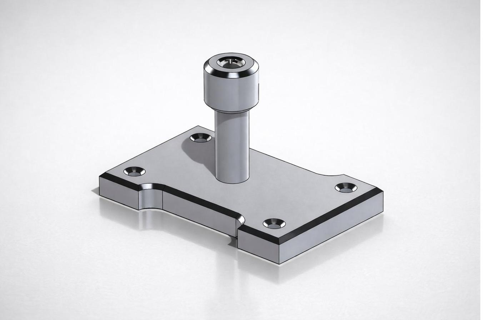

CAD Modeling · Fabrication
Hanger — CAD to Part
A hanger component I designed in SolidWorks and then machined myself on the mill and lathe, holding tolerances to within 0.001 inch — a full CAD-to-part workflow from model to finished 6061 aluminum piece.


Key Specs
- Workflow: designed in SolidWorks, then machined by hand
- Machining: mill and lathe
- Tolerance: held to within 0.001 in
- Material: 6061 aluminum
- Context: SJSU machine shop
Overview
A screw-mounted hanger component I took from a SolidWorks model all the way to a finished metal part — a base plate with mounting holes and a central post. I designed it in CAD, then machined it myself on the mill and lathe out of 6061 aluminum, holding tolerances to within 0.001 inch. It's a direct test of whether a model on screen can become a precise, real-world part.
Challenge
Machining to a thousandth of an inch leaves almost no margin. Every cut on the mill and lathe had to match the modeled dimensions exactly, because at that tolerance a small mistake means scrapping the part and starting over. The challenge was translating clean CAD geometry into a sequence of machining operations that could actually hold that precision by hand.
Process
I modeled the hanger in SolidWorks, defining the dimensions and features that would drive the machining. Then I worked it on the mill and lathe at the SJSU machine shop, cutting to the modeled geometry and checking dimensions as I went to stay within 0.001 inch. The finished 6061 aluminum part matched the model.
What I learned
Designing a part and then making it yourself closes a loop most coursework never does — you feel exactly which dimensions matter, where tolerances are realistic, and which features are easy or hard to cut. Holding 0.001 inch by hand taught me how much discipline real precision takes, and how a CAD model is only as good as your ability to turn it into a part.